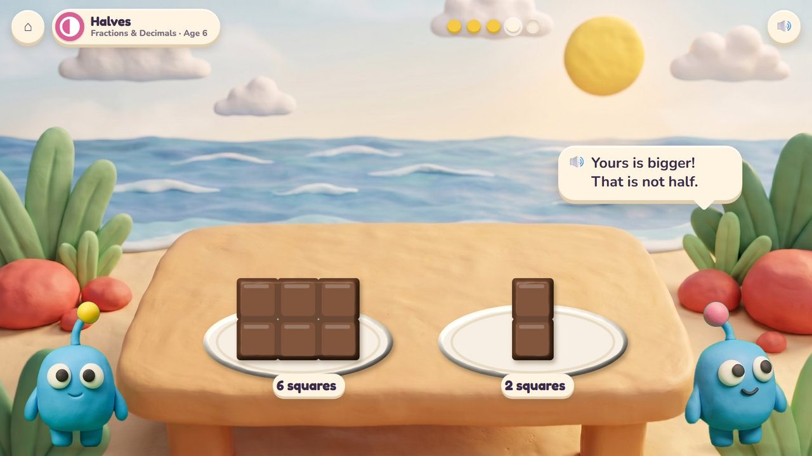
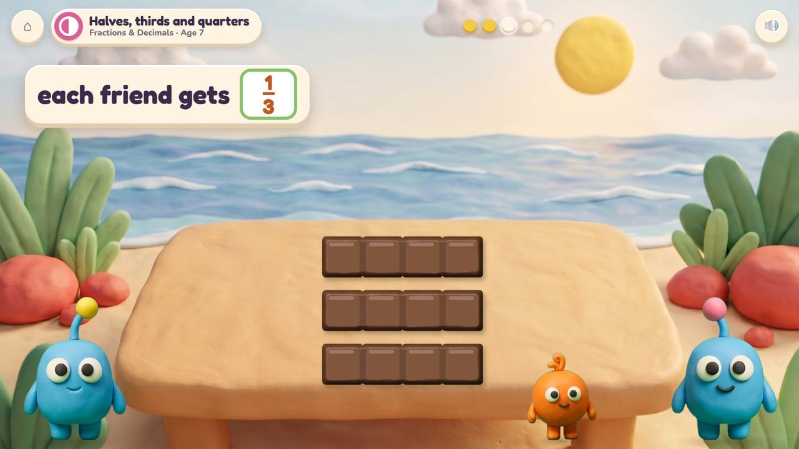
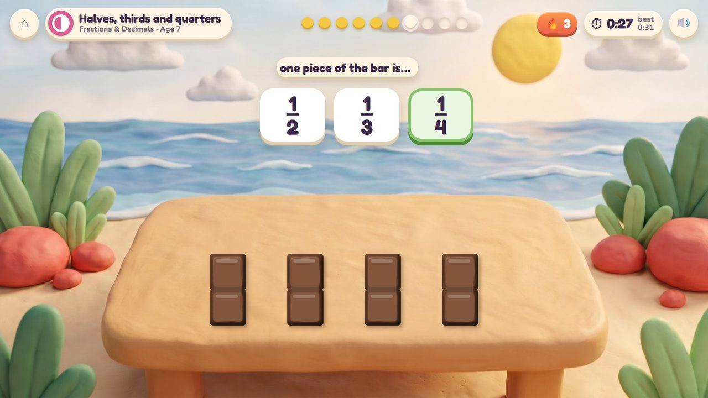
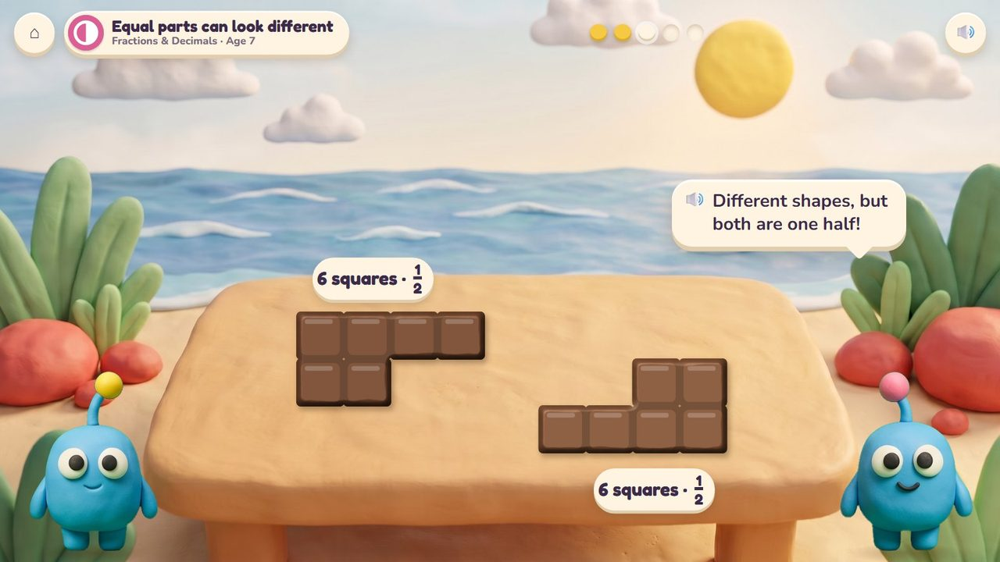
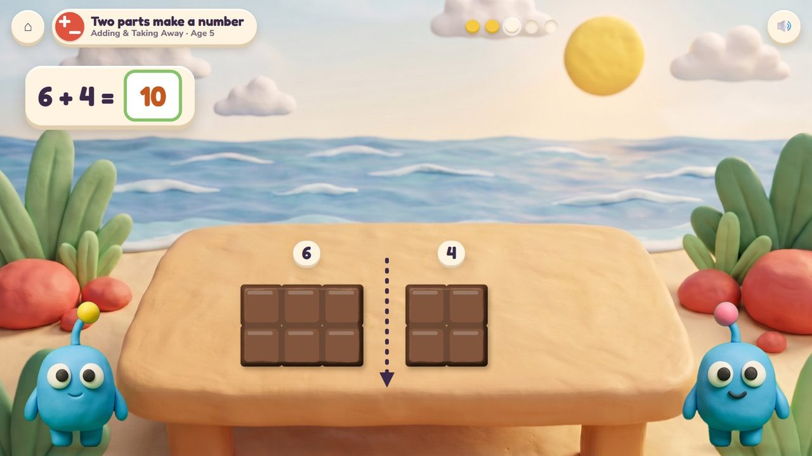

Chocolate Snap
Snap a clay chocolate bar along its grooves so the twins get exactly the same.
10 lessons (9 taught here first, the rest practised here) in 4 topics:
Adding & Taking AwayTimes & SharingFractions & DecimalsShapes & Space

The game
Bim and Bam share everything exactly. The child snaps a clay chocolate bar along its grooves: every piece breaks clean, so equal really is equal. Two equal pieces are halves, four are quarters, three are thirds; the twins hold their pieces side by side, and a wrong snap shows at once who got more. The same bar is rows and columns of squares.
Hands-on
Swipe along a groove to snap; drag the pieces to the plates.
The end of a round
The twins hold up their pieces side by side, then munch.
How it plays
A storyboard of the game in one lesson, drawn from the app's own clay pictures.
1Share it fairly
Halves, age 6: swipe along the middle groove.
🔊 “Exactly half each, please!”

2Snap!
Two equal pieces: one half each.
🔊 “The same! One half each.”

3A wrong snap
Six squares and two squares are not halves.
🔊 “Yours is bigger! That is not half.”

4Thirds
Age 7: three friends, three equal strips: one third each.

5The quick round
Four equal pieces: tap one quarter. Timed.
The quick round (from age 6)
A snapped bar: tap the fraction one piece is (a half, a third, a quarter). Ten questions at 6-7, a 60-second round from 8; your time and your best on screen; only right answers count; a miss shows the answer and comes back later. No clock under 6.
The same game, other lessons and ages
The badge at the top left says the topic, the lesson and the age.

6Equal parts can look different · age 7
Two halves of twelve squares, different shapes: both are one half.

7Two parts make a number · age 5
A bar of ten snaps into six and four: 6 + 4 = 10.
From age 5 to 7
| Age 5Kindergarten | Two parts make a number: snap ten squares into 6 and 4. |
| Age 6Grade 1 | Halves and quarters; more parts, smaller parts; half circles (a round cookie too). |
| Age 7Grade 2 | Halves, thirds and quarters; equal parts can look different; a whole is 2 halves, 3 thirds, 4 quarters; rows and columns. |
What changes from lesson to lesson
The bar
2 × 2 up to 4 × 3 squares; a round cookie for half and quarter circles
The share
2, 3 or 4 friends
Help
pieces laid side by side; the squares counted after a miss
How you answer
a swipe to snap; one tap for the quick round
Its 10 lessons
Age by age they are on the full list; here grouped by topic (the first activity named teaches a lesson, the others practise it).
Adding & Taking Away 1
- Two parts make a number
K.OA.3Chocolate Snap · Poke Pals · Seesaw Twins
Times & Sharing 1
- Rows and columns
2.OA.4Chocolate Snap · Raft Rescue
Fractions & Decimals 6
- Halves
1.G.3Chocolate Snap · Mirror Wings - Quarters
1.G.3Chocolate Snap · Mirror Wings - More parts, smaller parts
1.G.3Chocolate Snap - Halves, thirds and quarters
2.G.3Chocolate Snap · Mirror Wings - Equal parts can look different
2.G.3Chocolate Snap - A whole is 2 halves, 3 thirds, 4 quarters
2.G.3Chocolate Snap
Shapes & Space 2
- Half circles and quarter circles
1.G.2Mirror Wings · Chocolate Snap - Split a rectangle into squares
2.G.2Chocolate Snap · Mirror Wings
Questions
- Chocolate, or another clay food the twins share (a waffle, a cracker)?
- Anything in the storyboard to change (say the frame number)?